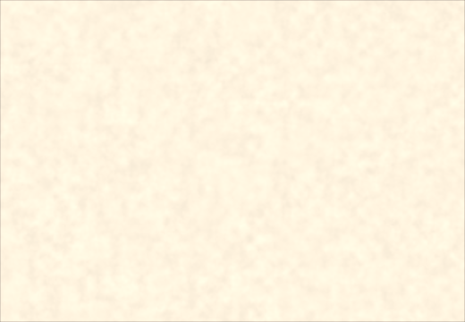
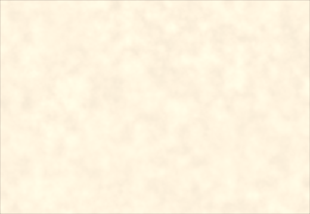

Four approaches to the repeating pattern, rendered on the same 520×360 element with formation amplitude raised to 0.07 so the grain itself is legible. Everything else is switched off.
A is paperlab as it ships. B is the halfway state. C is the enlarge-the-scale approach. D is where it landed.

Periodic float hash, one fixed seed for every surface. Grain at the research value of 2.5 mm.
Same periodic hash, but each surface offsets x and y into the field. Grain 2.5 mm.

Periodic hash kept. Grain enlarged to 5.0 mm so one tile (50×20 cells) is bigger than this element, plus the same per-surface offset.
Aperiodic PCG hash, per-surface seed, working dark-skew. Grain back at 2.5 mm.
paperlab hashes noise lattice points with a float trick that is exactly periodic on the integer lattice.
p = fract(p * vec2(123.34, 345.45)); p += dot(p, p + 34.345); return fract(p.x * p.y);
123.34 × 50 = 6167 and 345.45 × 20 = 6909 are both whole numbers, so the first fract() returns to the same value every 50 steps in x and every 20 in y. Checked directly: identical at 100% of lattice points for offsets (50,0), (100,0), (0,20) and (0,40), and 0% for controls like (20,50) and (7,13).
Autocorrelation of the albedo buffer at 96 dpi, where one noise cell is 4.724 half-res pixels.
| axis | predicted period | measured peak |
|---|---|---|
| X | 50 cells × 4.724 = 236.2 px | r = 0.692 at lag 236 |
| Y | 20 cells × 4.724 = 94.5 px | r = 0.665 at lag 94, again at 189 |
Comparing the sheet against itself shifted by exactly one period gave a mean |diff| of 6.33e-3 against 1.03e-2 for a deliberately wrong shift: 39% more similar than chance. Partial rather than total only because fbm rotates each octave, so the lattice period lines up for the dominant octave and not the rest. After the fix the one-period shift is indistinguishable from a wrong one (1.04e-2 vs 1.05e-2), and autocorrelation decays monotonically with no peak at any lag.
Doubling the grain doubles the tile. It moves the repeat rather than removing it, and the grain has to keep growing with the element.
| element height | grain needed | at 2.5 mm (research) | at 5.0 mm |
|---|---|---|---|
| 200 px | 2.65 mm | r=0.318 @lag 128 | r=0.111 @lag 40 |
| 360 px | 4.76 mm | r=0.547 @lag 95 | r=0.501 @lag 191 |
| 600 px | 7.94 mm | r=0.608 @lag 95 | r=0.595 @lag 189 |
| 800 px | 10.58 mm | r=0.597 @lag 95 | r=0.604 @lag 189 |
The tile has to exceed the element including the shadow margin, so an 800 px hero needs about 11.6 mm grain against a research value of 1–3 mm. The approach works at a size you fix in advance, and fails silently the day an element gets taller. The Y period being only 20 cells is what makes it impractical: at 50 in both axes it would have been viable at the research grain size.
Found while checking whether the hash swap had cost any paper character. It had not, but this turned up in the same measurements.
// paperlab: f * abs(f) is an ODD function, so a negative coefficient // shrinks BOTH tails equally. Contrast compression, not skew. f += skew * (f * abs(f) - 0.15);
| formation.skew | before · histogram skew | after · histogram skew |
|---|---|---|
| 0 | 0.0102 sd 9.58e-3 | 0.0102 sd 9.58e-3 |
| −0.3 (default) | 0.0102 sd 9.16e-3 | −0.5672 sd 9.69e-3 |
| −1.0 | 0.0103 sd 8.18e-3 | −1.6097 sd 10.7e-3 |
| −3.0 | 0.0124 sd 5.58e-3 | −2.3964 sd 17.1e-3 |
The knob never skewed anything, it only ate contrast. Real formation has a longer dark tail, because fibre flocs read darker than the gaps between them read light. Breaking symmetry needs an even function of f. This is a paperlab bug inherited by the port, not a regression, so the C++ lab has never had a working skew knob either.